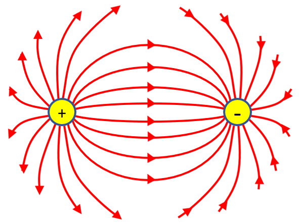
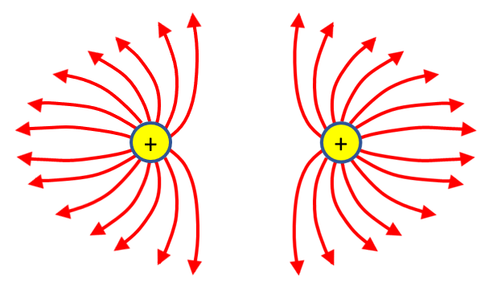
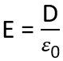

HOME BLOG EBOOKS ABOUT CONTACT SHOP
In the previous section, we represented the Electric field using outward pointing vectors (inward for negative charge). But Michael Faraday suggested an alternate way to represent the electric field, using field lines. This provided an easier way to represent more complicated fields.
These field lines have the following properties:
These field lines originate from a positive charge and terminate at a negative charge.

In the absence of the opposite polarity charge, the field lines from the positive charge terminate at infinity and similarly, the field lines from the negative charge originate at infinity.

The more crowed the field lines are, the stronger is the field.
The field lines never intersect each other.
The field lines are independent of the medium in which the charge is placed.
The field lines always enter or exit a surface normally.
For this new representation, the Electric flux density denoted by D, is used to quantify the strength of the Electric field. But both the Electric flux density D and the Electric field intensity E are not the same quantity.
That's because the Electric field around a charge is not just depended on the charge, it also depends on the Medium in which the charge is placed. As an Electric field passes through a medium, the atoms tend to polarize adding their own electric field to the existing field. The Electric field Intensity E is the strength of this total field, taking the effect of the medium into account. Whereas, the Electric flux density D is just that part of the total electric field discounting the effect of the medium. In free space, the two quantities are related as,
